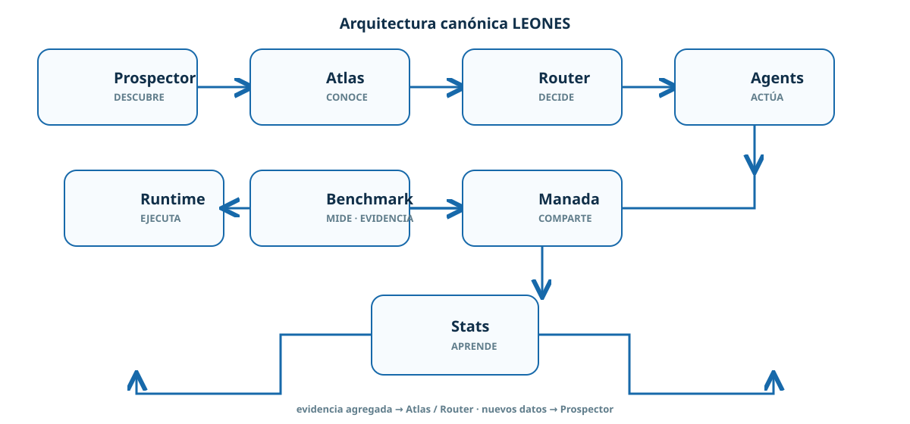
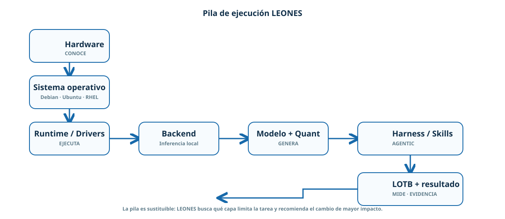
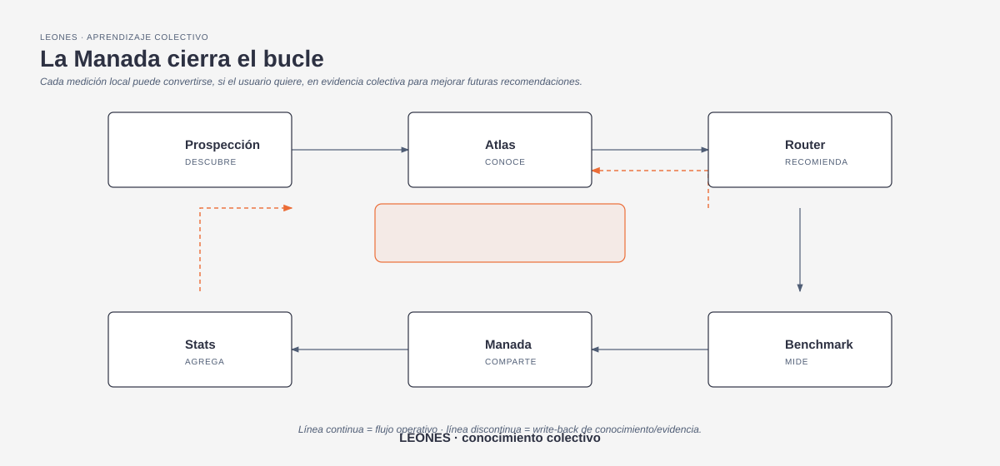

Diagramas que explican, no decoran
Los esquemas de esta página siguen una gramática editorial: pocos nodos, jerarquía clara, conectores ortogonales, una sola señal de énfasis y el mismo lenguaje visual que la identidad LEONES.

Arquitectura canónica
El recorrido de descubrimiento a evidencia: Prospector → Atlas → Router → Agents → Runtime → Benchmark → Manada → Stats.

Pila de ejecución
Hardware → sistema operativo → runtime/drivers → backend → modelo/quant → harness/skills → LOTB.

Bucle de aprendizaje
La evidencia local puede volver al conocimiento colectivo cuando el usuario decide contribuir a la Manada.